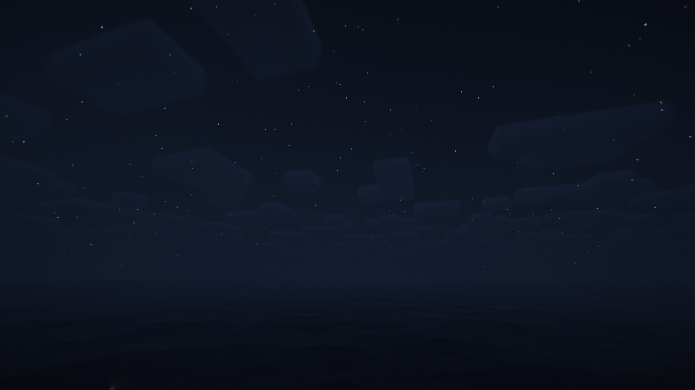
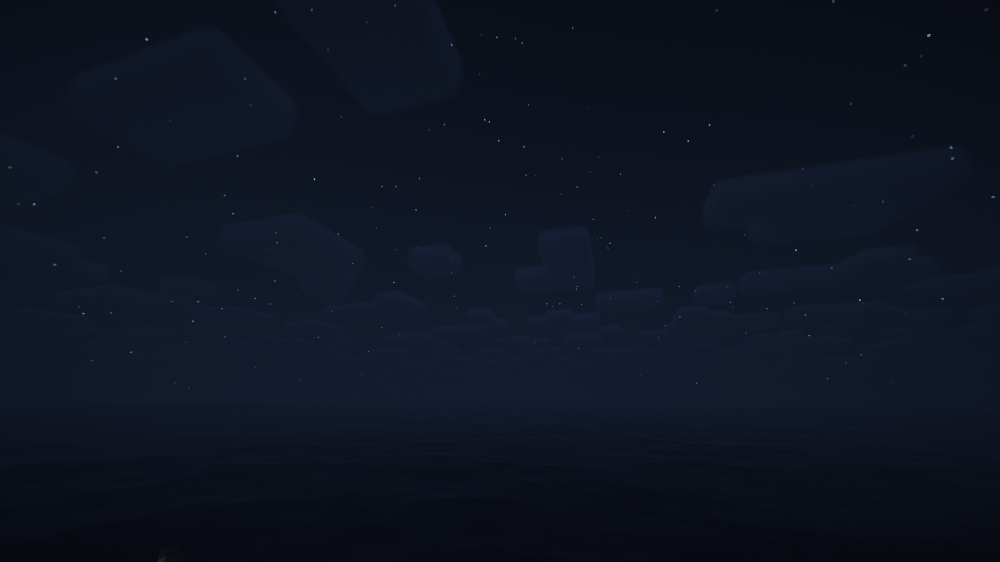
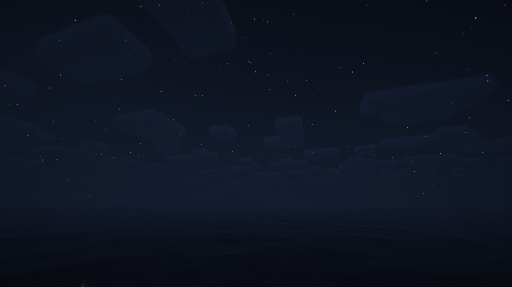

Webtop Setup
Quick setup — get your desktop looking fresh
Simple setup wizard. Click to preview, then finish to apply.
Welcome
Let’s pick a wallpaper and an accent color. You can change these later in Settings.
Pick a wallpaper


 



Click any image to preview it on your desktop.

Choose an accent color
Accent updates live. It changes buttons, highlights, etc.
All set
You may now close this window to Use webtop 4